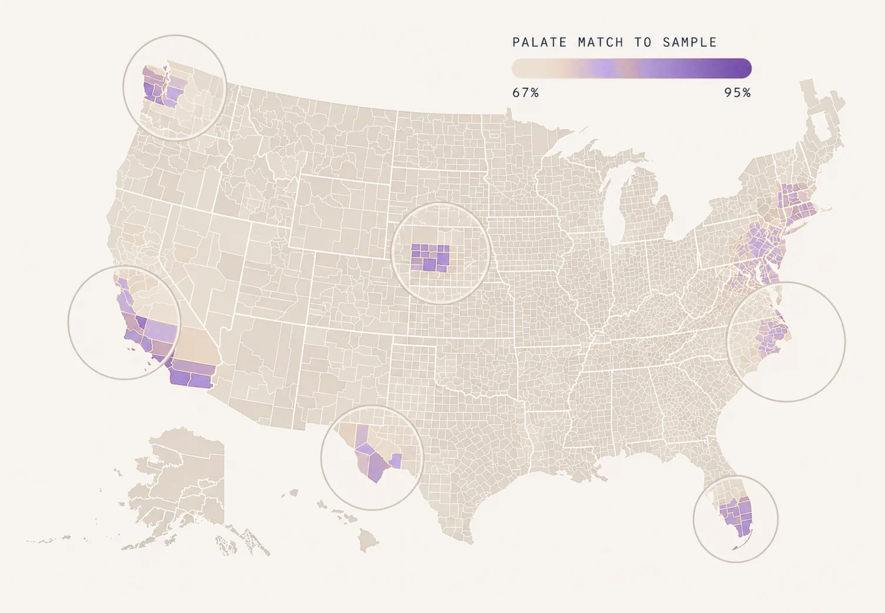
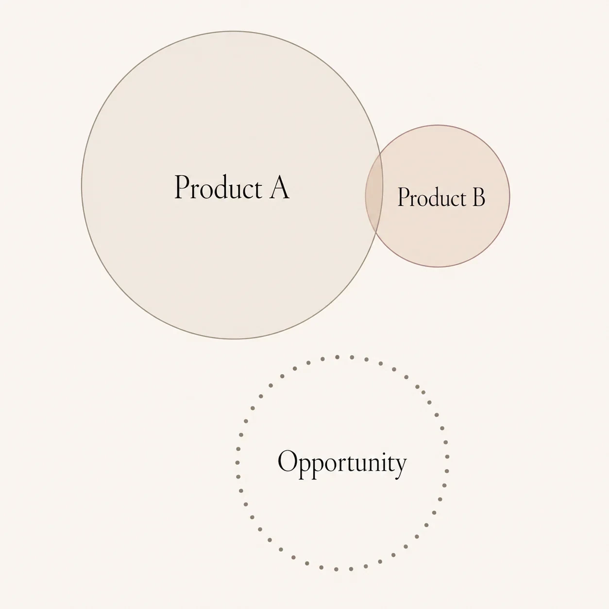
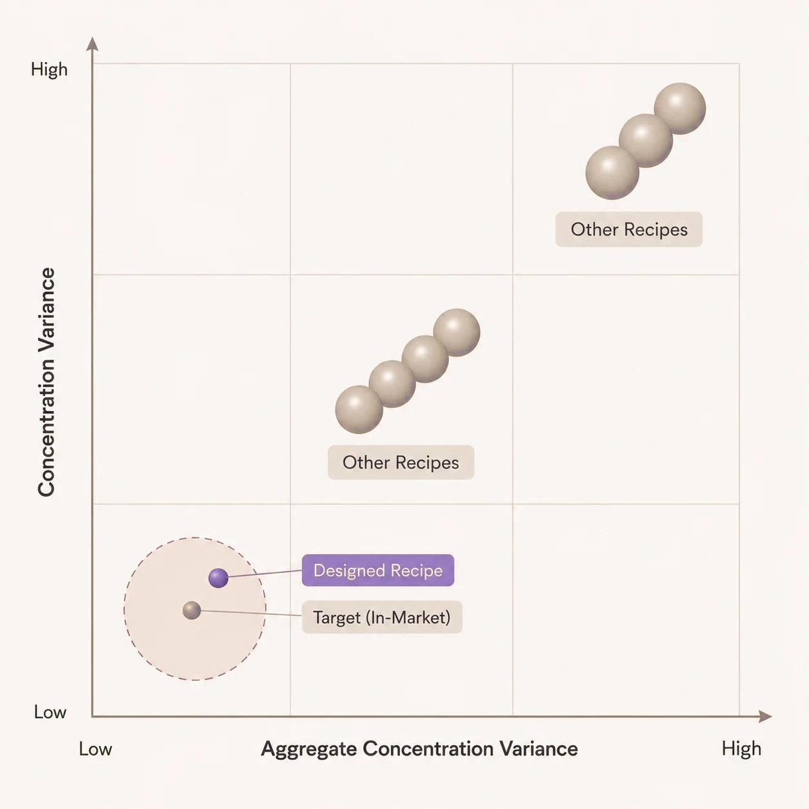
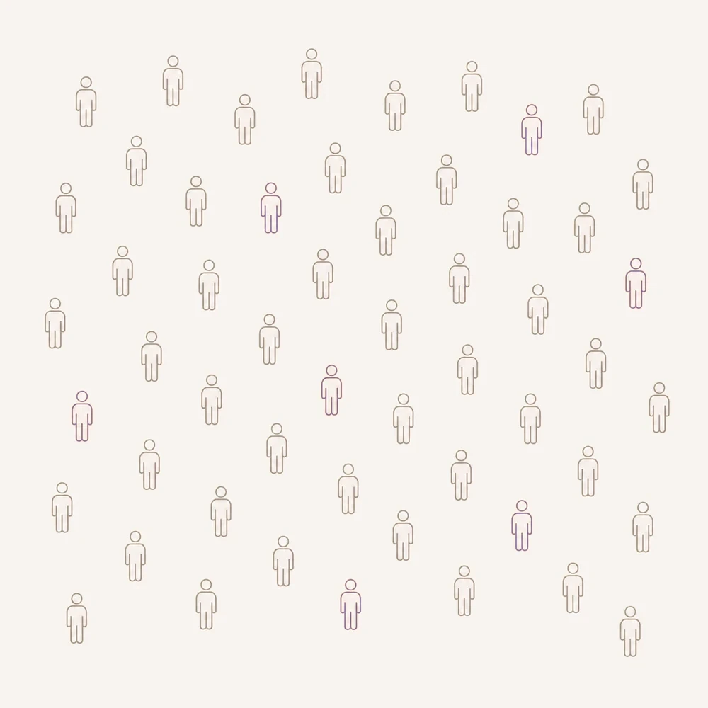

Tastry replaces the trial-and-error inside every stage of consumer product development. From forecasting demand to engineering the formulation to targeting the audience that is most likely to love it.
Most product portfolios start as a hunch and get refined by the time the hunch is too expensive to walk back. Tastry inverts that. We forecast opportunity at the store, region, and demographic level using real chemistry-to-preference signal, before a brief is written, a recipe is drafted, or a single panelist is booked.


Every portfolio overlaps with itself somewhere and misses preference space somewhere else. Tastry maps where your products actually compete, and where they leave audience on the table for a competitor to take.

Iterate on a digital twin of the product against a digital twin of the consumer. Run millions of candidate formulations in minutes. Find the one with the highest density of love inside your target audience. Build only that one in a lab.
A global flavor house spent 18 months and 9 attempts to match a customer's target. We matched it on the first try in 2 weeks.
Demographics are a weak proxy for preference. Two thirty-something women in the same zip code can have radically different chemistry-level palates. Tastry targets at the level where preference actually lives, so brands stop marketing to the population and start marketing to the people who will love them.
